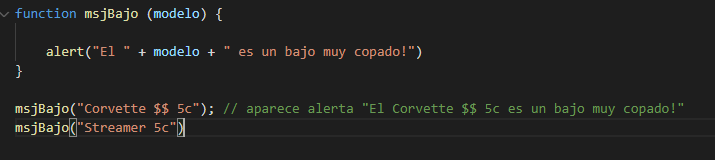
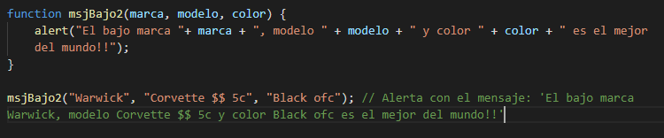
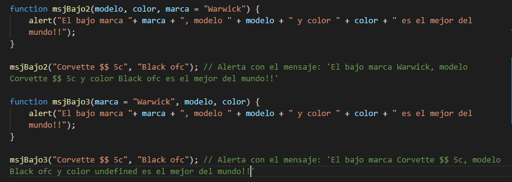

Apuntes Clases JavaScript - NUCBA - pag.4
Funciones en Javascript
Parametros:
los parametros existen para hacer una función más dinámica y achicar el código. Nada más es que una variable que existirá solamente en la función especificada. En el ejemplo abajo, se declara una función con un parámetro, y su posterior ejecución:

Se puede usar parametros multiples, para una función:

Podemos asignar un valor por defecto a un parametro. De esta forma, este va a tener este valor si ninguno fue asignado en la función. El valor de parametro asignado en la ejecución tendrá prioridad sobre el por defecto. Vamos al ejemplo:

Devolucion de Valores:
Lo importante por ahora es entender que para retornar alguns valores de una función, se adopta 'return' EN EL FINAL DE LA FUNCIÓN!. Cualquier código después del return, no será leído!
Siguiente página - >>>>>>>>>>>>>>